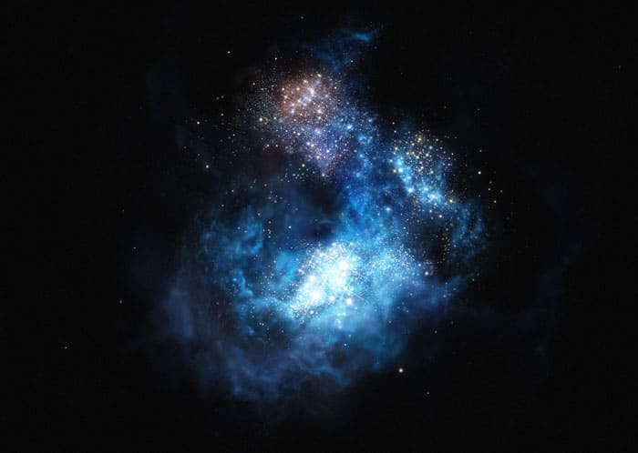
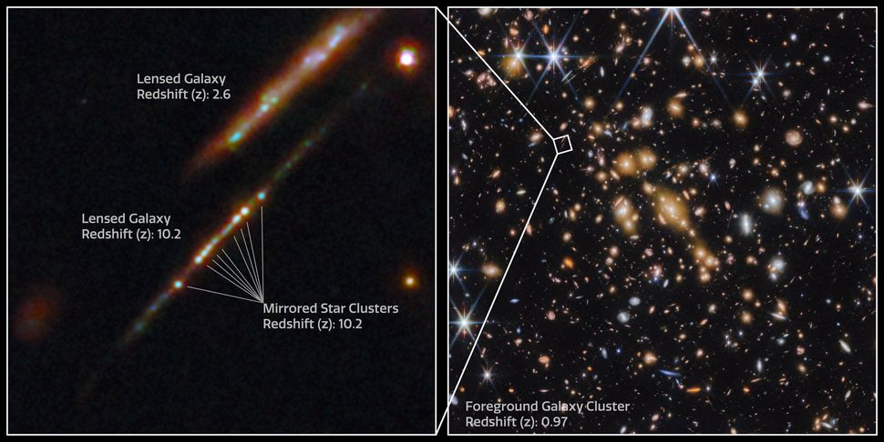
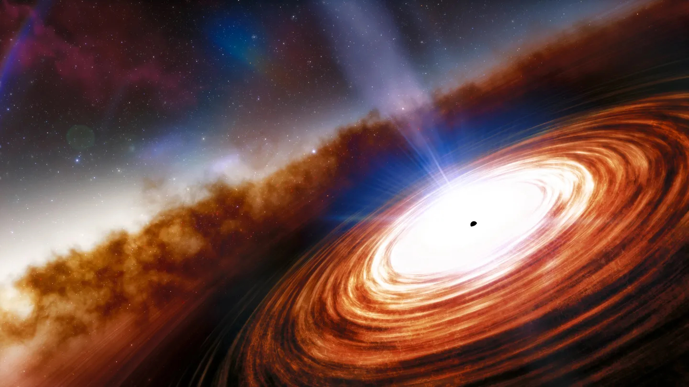
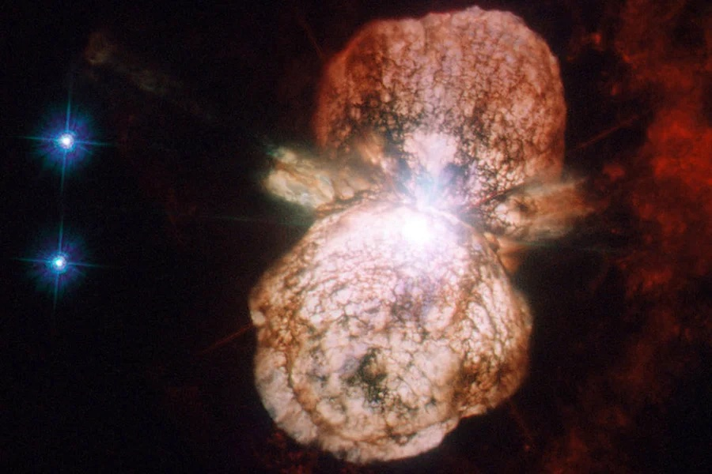

Flagship programs
Programs we lead
Large observing programs designed and led from Toronto, plus 15+ major collaborations with JWST, ALMA, and Subaru.
Seiji Fujimoto, Assistant Professor, David A. Dunlap Department of Astronomy & Astrophysics
Venturing into unknown horizons and sharing the wonder of discovery is at the heart of my work as an observational astronomer. We study the earliest galaxies, black holes, and stars with JWST, ALMA, and observatories around the world.
Multi-wavelength observations across the first billion years, from individual lensed stars to the assembly of entire galaxies.

How the first galaxies formed and grew at z > 6, traced with JWST spectroscopy and ALMA [CII] + dust imaging.

Gravitational lensing resolves early galaxies to parsec scales, down to proto-globular clusters and individual stars.

The first quasars and the puzzling "Little Red Dots": how supermassive black holes grew so quickly in the early universe.

Lensing clusters as time-domain telescopes: magnified supernovae at z > 2 probing the first stellar explosions.
Recent first-author and student-led papers from the group.
Browse all publications with filters →Large observing programs designed and led from Toronto, plus 15+ major collaborations with JWST, ALMA, and Subaru.
Postdocs, grad students, and undergrads working on JWST and ALMA data at the frontier of the observable Universe. We recruit PhD students every year and welcome postdoc fellowship applicants.
Apart from research, I'm passionate about traveling, sports, photography, and both outdoor and indoor activities.
David A. Dunlap Department of Astronomy & Astrophysics
Room 226, 50 St George St
Toronto, ON M5S 3H4, Canada